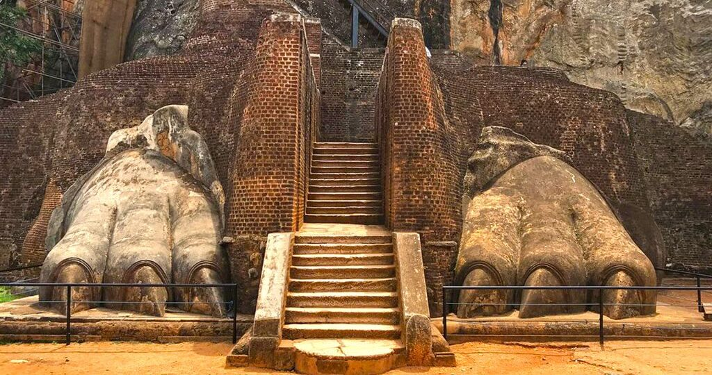
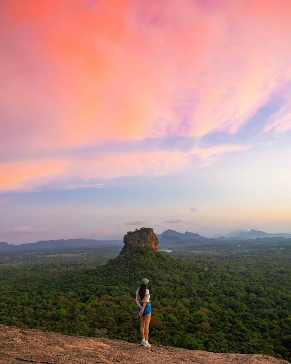

Key Attractions

Sigiriya Rock Fortress
A 200m ancient rock citadel with palace ruins.

Lion’s Paw
Massive stone lion paws marking the entrance to the summit climb.

Water Gardens
Advanced hydraulic gardens from the 5th century.

Mirror Wall
Ancient graffiti and polished stone pathways.

Sunset Views
Iconic landscapes featuring Pidurangala and the forest plains.